// Redstone Town
什么是红石镇
红石镇是隶属于 Wee-Axe 服务器的社区，目前是服务器中的最大社区。
// Community
社区情况
社区活跃，镇长是 Mashiro_Neri
小镇最可爱的吉祥物—— Mashiro_Neri
IQ 为负，淫商拉满
古人云："淫商换智商，地球能进 91 级文明"

// Organization
社区组织

研究部
R & D红石镇技术研发团队，让红石镇的技术始终走在服务器最前列。
"把幻想变为可能，把可能变为现实。"

建筑部
Builder红石镇建筑、规划团队。
"作为创世神，手握真理（WE 和 AX），世界的缔造者，让世间万物重构成最美妙的样子。"

废物部
Fun红石镇的乐子潜力团队，聊天吹水，当潜水炸弹。
"我直接耍起嘛。"

管理部
Admin红石镇管理部门。
"万物秩序的终点。"
Join Redstone Town